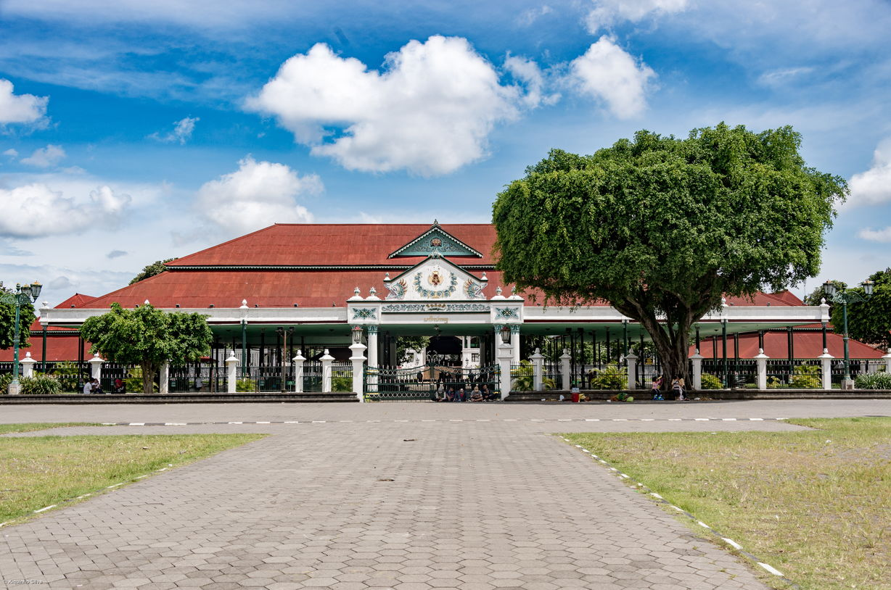

Discover Yogyakarta’s Majestic Palaces
Photo by xiquinhosilva, used under CC BY 2.0.
Yogyakarta’s palaces are a window into the rich heritage of the Javanese Sultanate. These historical landmarks, each with their own unique stories and architectural marvels, offer visitors an immersive experience into the royal past of Yogyakarta.
Kraton Yogyakarta - The Royal Heart
Photo by Jorge Franganillo, used under CC BY 2.0.

Photo by Jorge Franganillo, used under CC BY 2.0.
Photo by Francisco Anzola, used under CC BY 2.0.
Established in 1755, Kraton Yogyakarta is the heart of the city’s culture and history. Covering 144 hectares, including 13 hectares of palace grounds, this royal complex features traditional Javanese architecture and living history. Explore the ornate pavilions and royal treasures at the Keraton Museum, and witness the Golden Pavilion (Bangsal Kencono), where ceremonies continue to this day. Experience the grandeur of Javanese royalty and tradition at Kraton Yogyakarta.
Taman Sari - The Water Castle
Taman Sari, built in the 18th century, served as a luxurious royal garden and retreat for the Sultan and his family. Covering about 10 hectares, this enchanting complex is renowned for its tranquil bathing pools, ornate pavilions, and intricate underground tunnels. Once a serene haven for royal relaxation and ceremonies, Taman Sari now invites visitors to explore the opulent leisure and majestic lifestyle of Javanese royalty.